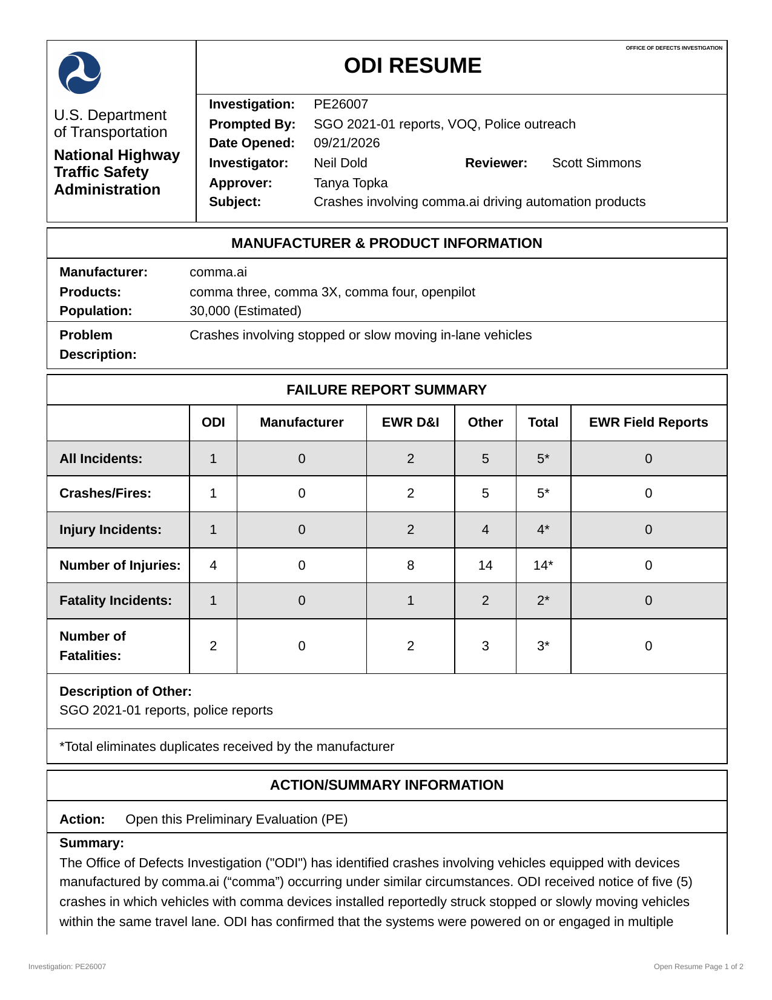

On 21 September 2026 NHTSA, the US vehicle-safety regulator, opened an investigation into five crashes in which cars running openpilot on comma devices "reportedly struck stopped or slowly moving vehicles within the same travel lane". openpilot does not come with an engineered, checked argument that it is safe enough there; its documentation leaves stopped vehicles to the driver. LionDriver runs the same driving stack, and started eighteen days later to build that argument in the open: what can go wrong, what should stop it, and the evidence for whether it does.

What the report says
- The pattern. In all five crashes, a stopped or slow vehicle ahead, in the same lane.
- The system was on. NHTSA confirmed it was "powered on or engaged in multiple crashes", and its first look suggests it "may not have adequately detected or responded to the in-lane vehicles".
- Forks are in it. NHTSA will "consider the shared components between openpilot and the fork". LionDriver is a fork.
- What it is not. A Preliminary Evaluation is the first step of an investigation, not a finding of a defect. No crash in it has been reconstructed.
The problem statement
With openpilot engaged on public roads, a car can hit a stopped or slow vehicle in its own lane: openpilot does not brake enough in time, the driver does not take over in time, and the car's own emergency braking, where fitted, does not prevent the crash.
Three protections, a weakness in each
At 108 km/h openpilot needs about 144 m to stop once it is sure of the stopped car; full braking needs 71 m. From the code LionDriver inherits, not from any one crash.